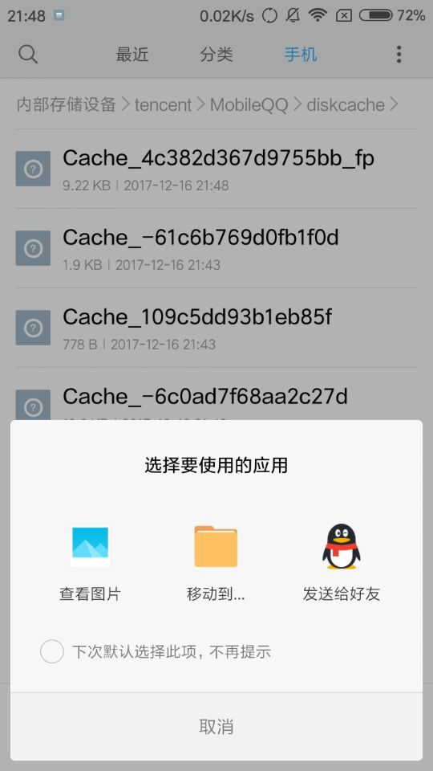
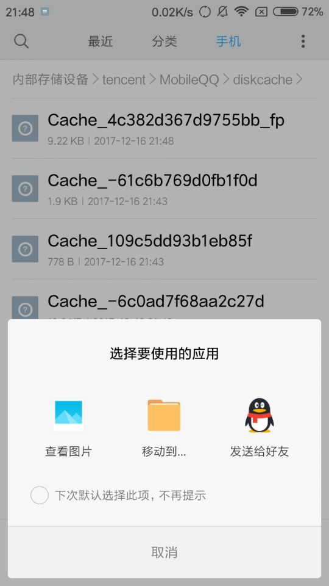

QQ闪照的保存
技术 一叶舟 1级
通常在QQ的闪照只能看5秒且无法截屏。那么我们怎么才能保存闪照呢？
1.首先打开文件管理。按照如图所示的地址打开。
2.切换到QQ，打开闪照，保持图示状态（不要按）。

3.切换到文件管理，会发现多了一个文件（以_fp结尾），点按打开，选择图像，然后用图库查看，或者发送给好友。


就是这样，喵~
通常在QQ的闪照只能看5秒且无法截屏。那么我们怎么才能保存闪照呢？
1.首先打开文件管理。按照如图所示的地址打开。
2.切换到QQ，打开闪照，保持图示状态（不要按）。
3.切换到文件管理，会发现多了一个文件（以_fp结尾），点按打开，选择图像，然后用图库查看，或者发送给好友。

就是这样，喵~